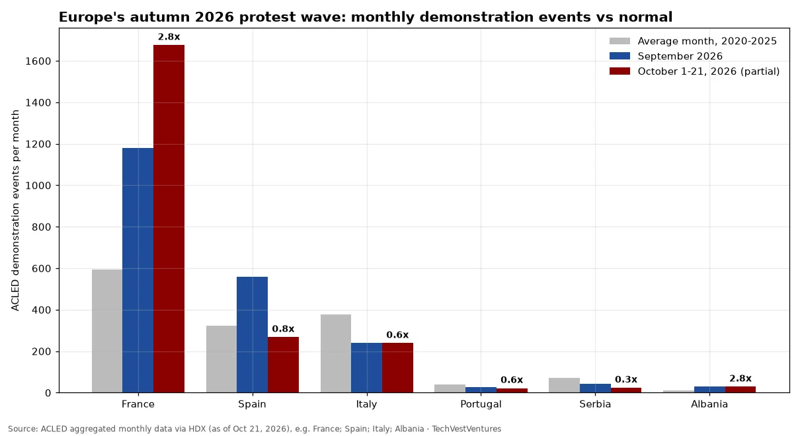

Q6. Europe Wave

ACLED demonstration events (protests plus riots) per month. Labels show the October 1-21 count as a multiple of each country's average month in 2020-2025. France: avg 593, Sep 1,181, Oct 1-21 1,676 (2020-25 record 2,108 in Mar 2023); Spain: avg 323, Sep 558, Oct 1-21 268 (2020-25 record 852 in Mar 2022); Italy: avg 378, Sep 239, Oct 1-21 239 (2020-25 record 880 in Feb 2022); Portugal: avg 39, Sep 28, Oct 1-21 22 (2020-25 record 89 in Jan 2024); Serbia: avg 71, Sep 43, Oct 1-21 24 (2020-25 record 421 in Feb 2025); Albania: avg 10, Sep 31, Oct 1-21 29 (2020-25 record 45 in Apr 2021). The wave is mostly French: France's first three weeks of October already ran 2.8 times its normal month. Albania (small numbers, but nearly 3x normal) and Spain's September spike are the other outliers; Italy, Portugal and Serbia are at or below their 2020-25 norm, so 'Europe in revolt' headlines overstate it. ACLED's cut-off of Oct 21 misses France's Oct 24 day, so expect upward revisions.
Sources: ACLED aggregated monthly data via HDX (as of Oct 21, 2026), e.g. France Spain Italy Albania